Formal scientific drawings are often works of art as well as scientific illustration. These are ordered chronologically.
Total scientific drawing count is 603.
Marcgrave (1648)


Petiver (1704)
Rumphius (1705)

Catesby (1743)
Seba (1758)

Herbst (1782)

Herbst (1790)

Latreille (1818)

Christophe-Paulin de La Poix de Fréminville (~1822-1839)
Desmarest (1825)

Guérin-Méneville (1829)

Eydoux (1835)

Latreille (1837)


Milne Edwards (1837)

Owen (1839)

Milne Edwards (1843)


De Kay (1844)
 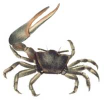
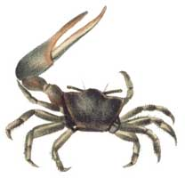
Hilgendorf (1869)

Milne-Edwards (1873)
Filhol (1885)

Kingsley (1886)

Heilprin (1888)

De Man (1891)


Rathbun (1900)

Holmes (1900)
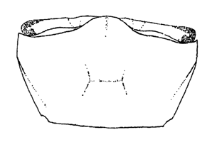


Alcock (1902)
 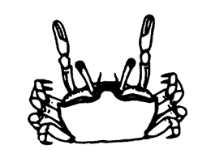
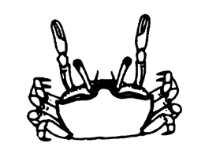
Rathbun (1902)


Holmes (1904)
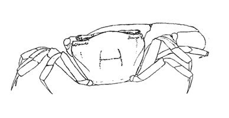
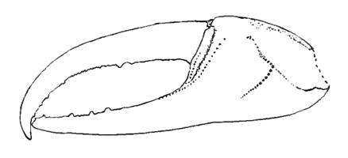
Paulmier (1905)
Stimpson (1907)


Pearse (1912)


Fowler (1912)
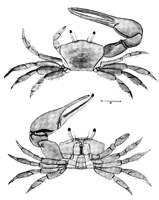


Pearse (1914)
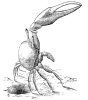
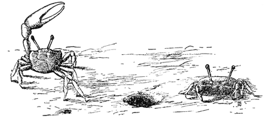


Doflein (1914)
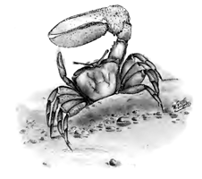
Rathbun (1915)

Pesta (1918)

McNeil (1920)
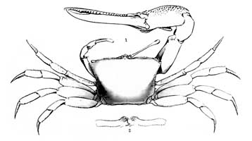

Gravely (1927)

Monod (1927)

Hediger (1934)

Boone (1934)


Tweedie (1937)

 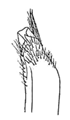
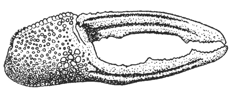
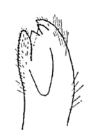
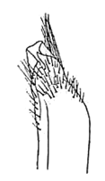
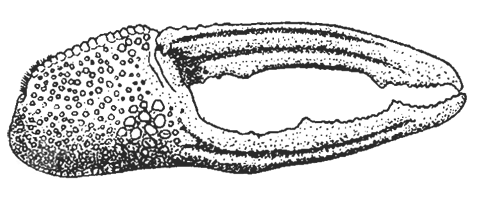
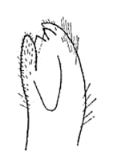


Oliveira (1939)
 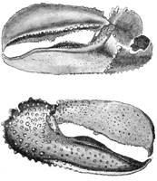
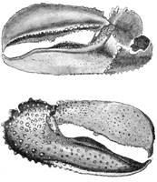

 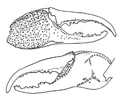
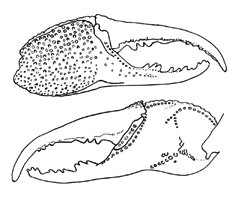
 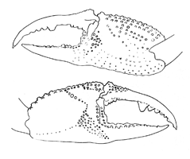
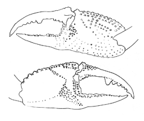
Bouvier (1940)

Crane (1941)


 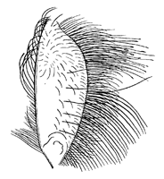
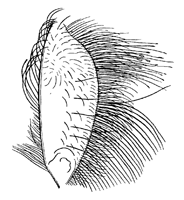
 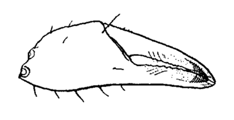
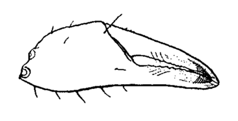
 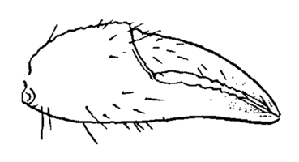
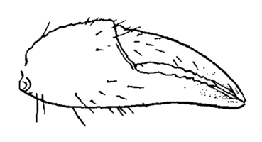


 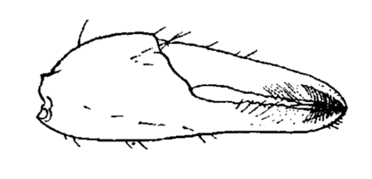
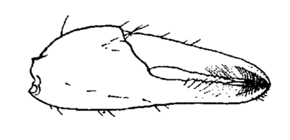


Crane (1943)


Barnard (1950)


Tweedie (1950)

Chhapgar (1957)


Gordon (1958)


Holthuis (1959)


 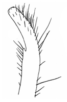
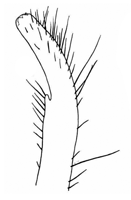

Monod (1959)
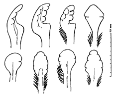

Green (1961)

Forest & Guinot (1961)
 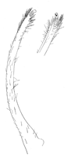
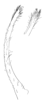
 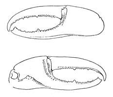
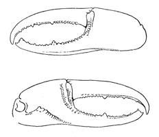


Crosnier (1965)
 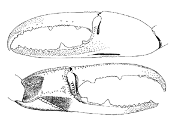
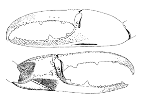


 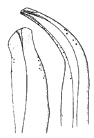
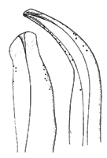


Williams (1965)
 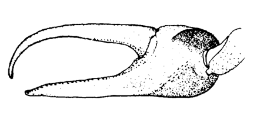
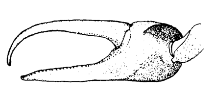

Crane (1966)


Macnae (1968)
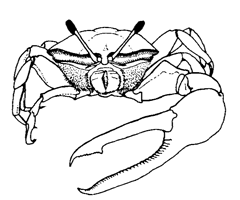

Salmon & Atsaides (1968)


Hinton (1969)

Chace & Hobbs (1969)

 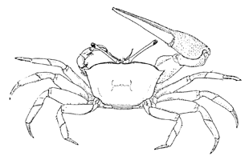
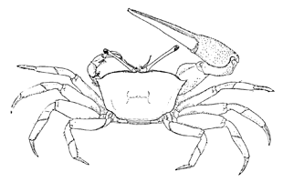


 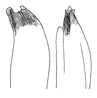
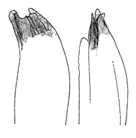


Kurata (1970)


 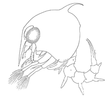
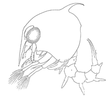
 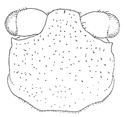
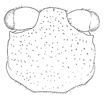
Bott (1973)

 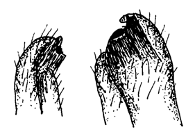
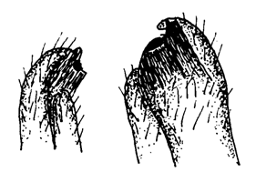


 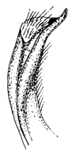
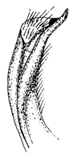


 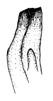
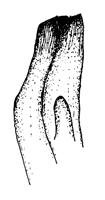
 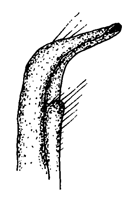
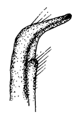
Serène (1973)
 dussumieri")
 lactea")
 lactea")
 lactea")
 annulipes") 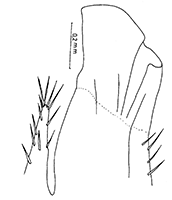
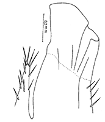
 annulipes")
 annulipes")
 annulipes")
Novak & Salmon (1974)
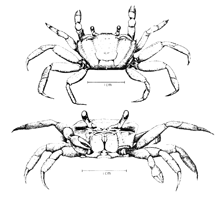
 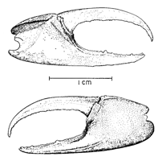
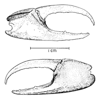
 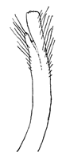
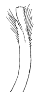


 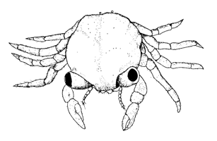
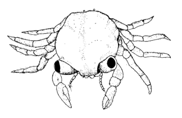


Crane (1975)
 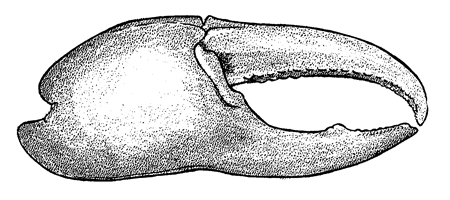
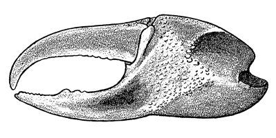
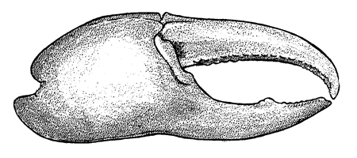
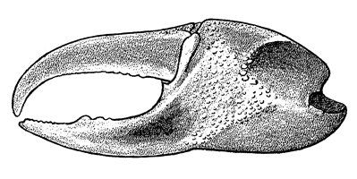


 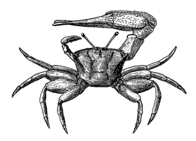
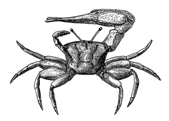


 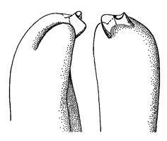
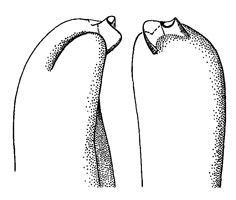


 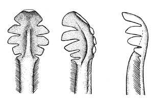
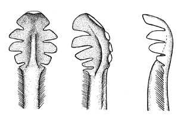


 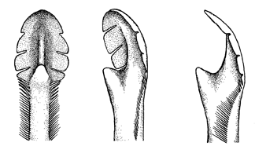
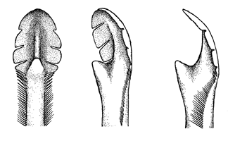


 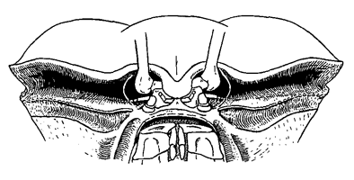
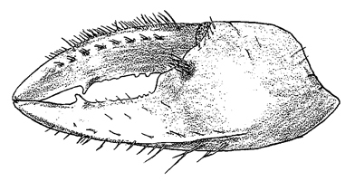
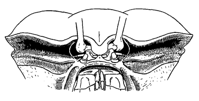
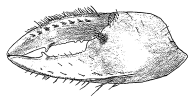


 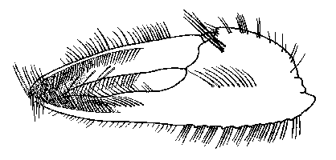
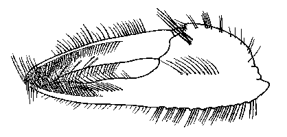


Allen (1976)

Thurman (1981)


von Hagen (1987)


Hartnoll (1988)

Morton & Morton (1994)

Naderloo et al. (2010)


Landstorfer et al. (2010)
Shih et al. (2010)

Shih et al. (2013)


Shih (2015)